This tutorial provides instruction to sign up an Twitter Developer account, which allows you to access Twitter data from the APIs.
Please activate your Developer account by 4/15 to get it approved in time for the Twitter workshop
Instructor: Yi Qiang (qiangy@usf.edu)
Teaching Assistant: Jinwen Xu (jinwenxu@usf.edu)
1.1 Go to the website of Twitter Developer Platform: developer.twitter.com. Click Sign-up.
1.2 If you already have an Twitter account, sign in your Twitter account, and move to Step 2: Activate Developer Account. If you don't have an Twitter account, please sign up a Twitter account. Please register using your phone number.
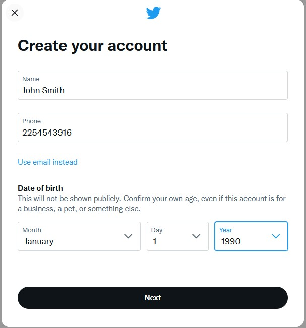
1.3 Click Next and enter the verification code when asked.
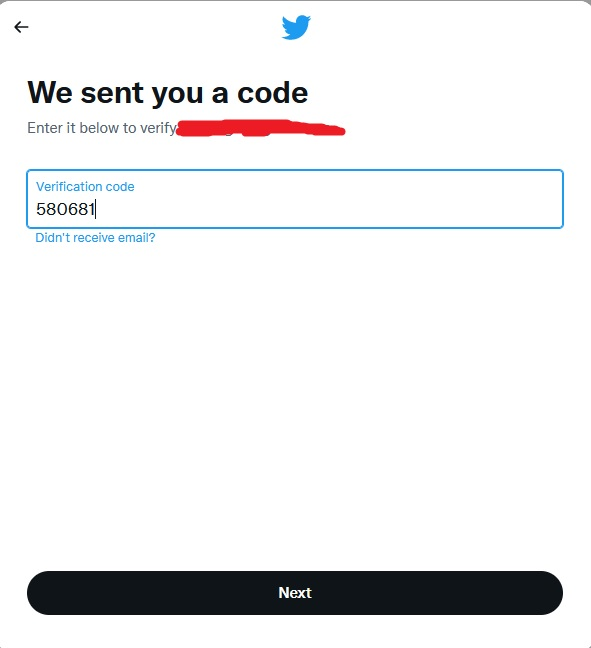
1.4 Create a password for your Twitter account. Skip Pick a profile picture, Describe yourself. Create a username.
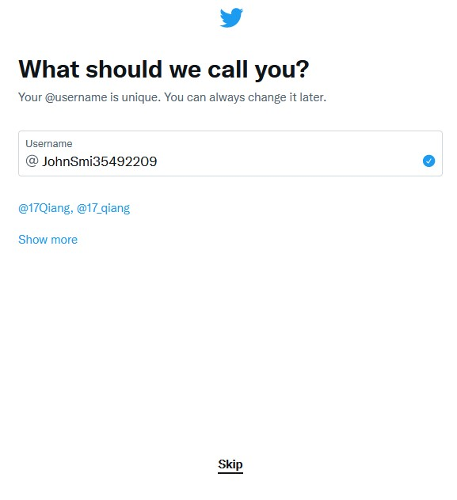
1.5 Skip Turn on notification, select some topics you want to see on Twitter, and choose some Twitter account to follow. Your registration is completed when you see your Twitter home page.
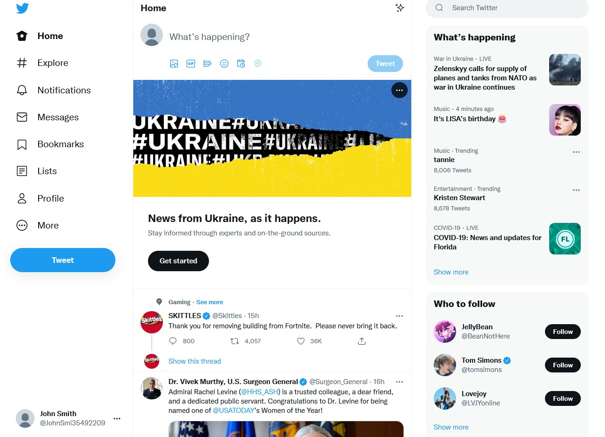
2.1 When you have signed in the Developer Portal using your Twitter account, you'll need to answer a few questions to get the Essential access. Please select 'No' for "Will you make Twitter content or derived information available to a government entity or a government affiliated entity?".
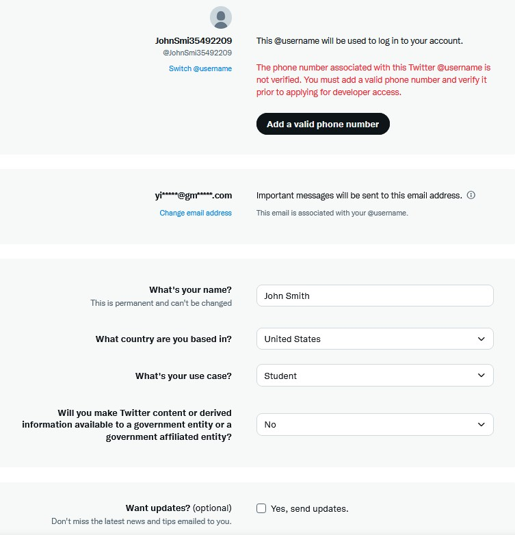
2.2 You need to add a phone number to your Twitter account if you haven't done it before. Enter the verification code to verify your phone number. When your phone is added, go back to the basic questions.
You may need to refresh the webpage after adding the phone number.
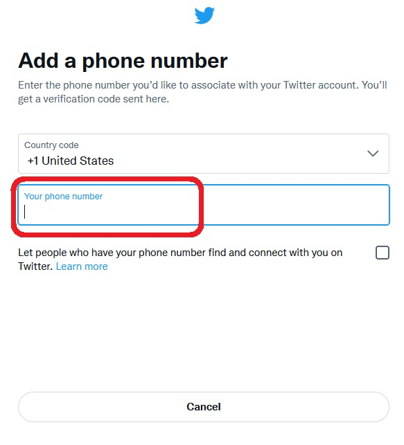
2.3 Agree the "Developer agreement & policy" and click Submit.
Verify the email in your registered email account.
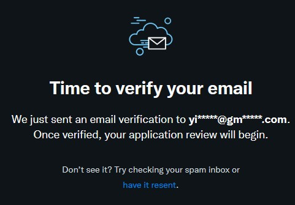
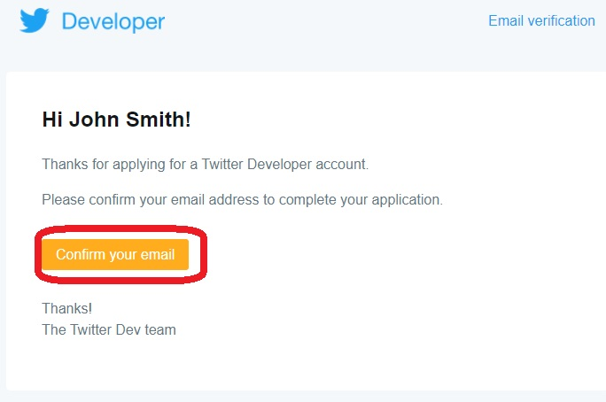
2.4 Enter a name for your application, e.g. GIS6017. Then click Get keys.
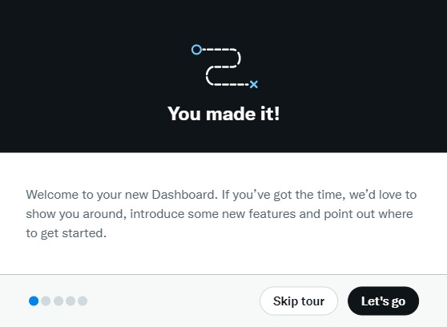
2.5 Now, your API keys and tokens are generated. These keys are like password for your Python program to access your Twitter account. Please save the API key, API Key Secrete and Bearer Token in an text file or Word document, and keep it secret. Don't worry if you lost them. You can always re-generate them in your Developer Portal.
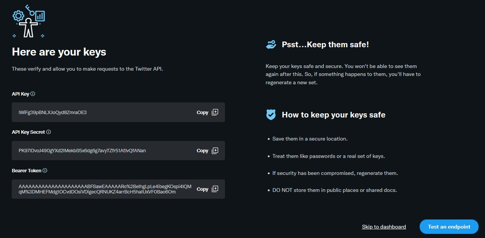
After you have saved the API keys and tokens, click Test an endpoint.
2.6 Test an endpoint. Click an sample Tweet in the left, and then copy and paste the request in the right to a text pad.
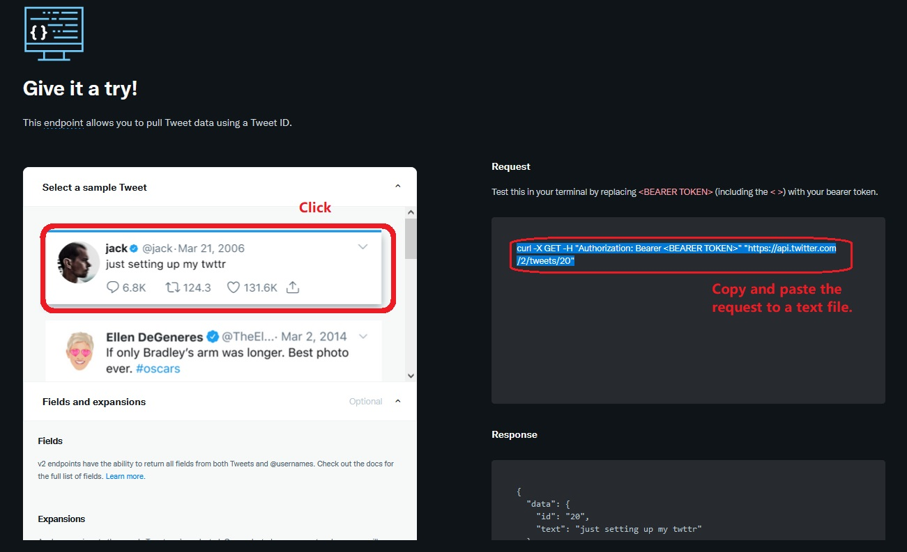
Replace <BEAR TOKEN> with the bear token you have saved (You can copy and paste to replace it).
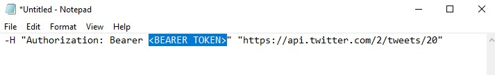
Then, copy the request with replaced Bearer Token, and paste it to Anaconda Prompt. Press Enter in your keyboard
Your Developer account is successfully activated if you see the sample Tweet text appears in the Prompt.
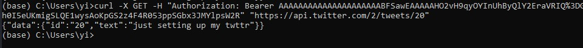
2.8 If you lost your API keys and tokens, you can re-generate them in the Developer Portal, under Projects & Apps.
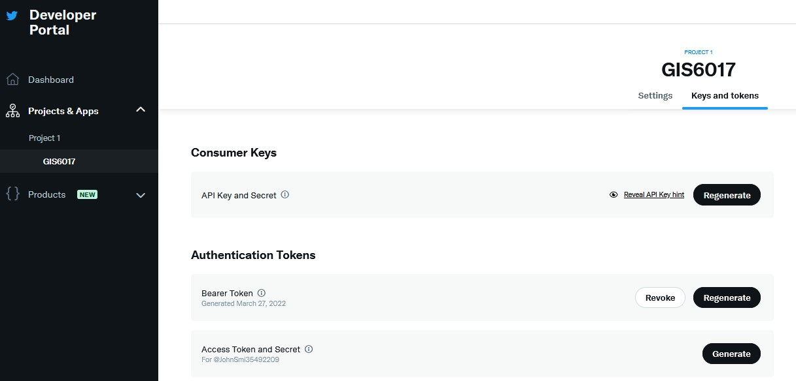
After completing Step 2, you have obtained the Essential Access in the Developer Portal. Next, you will apply for the Elevated Access to gain more advanced features in the Twitter APIs, including accessing geotagged tweets.
3.1 In the Developer Portal, click Product -> Twitter API v2 -> Elevated -> Apply for Elevated. Fill Basic info and then click Next.
Write a few of sentences to describe how you plan to use Twitter data and/or APIs. You can modify the following description to claim you will study a topic of your interest (e.g. the topic could be any sport events, natural disasters, political events, or culture...). Please do not submit the identical description. Twitter may find it out and disapprove your application.
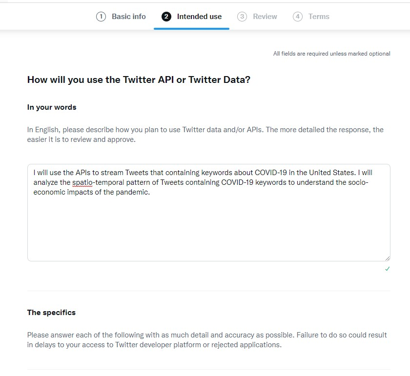
Choose No for all the following questions, and click Next. Click Next again in the Review page.
Agree the Developer agreement & policy and click Submit.
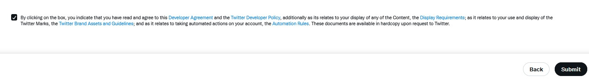
If you are lucky enough, your application will be approved immediately and you will see "You have Elevated access" in the Developer Portal.
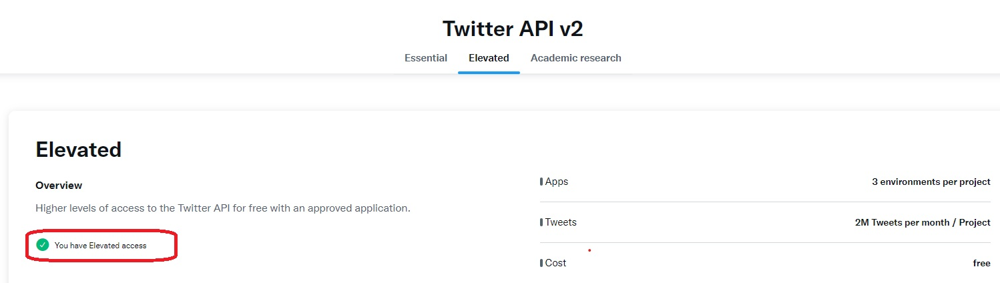
Sometimes, you will see "Your application for Elevated access is pending".
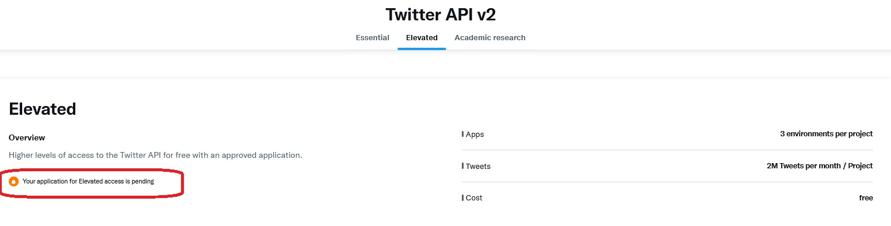
Later, you'll receive an email asking for more details. Just write a few sentences to answer the first two questions, and answer "not applicable" for the other questions. For the second question, you may say that "I will create maps or conduct analysis of Tweets aggregated in countries/states/counties. I will not display or publish Tweets at individual/row level by any means".
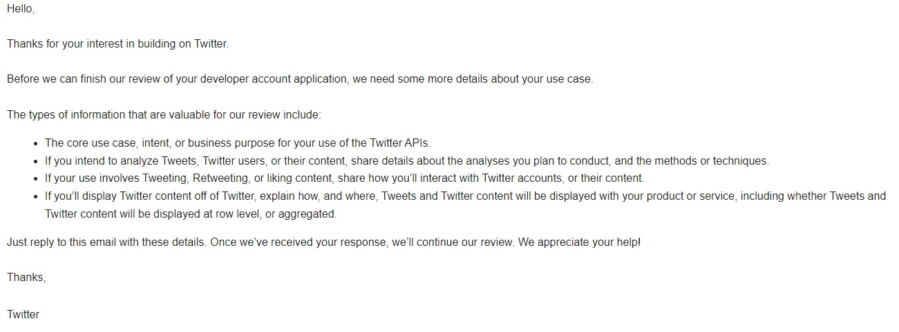
You may receive additional emails for your application. Just provide the details they ask for. Eventually, you will receive an email informing the approval of your Elevated Access.